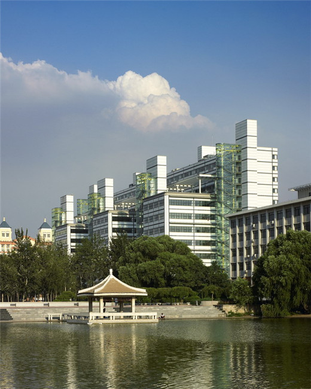

质量管理是工业工程的专业课程之一，控制图是用图形显示某项重要产品或过程参数的测量数据，是质量管理的工具之一。
借助控制图，可以观测到生产过程中，产品质量由于受随机因素和系统因素的影响而产生的变化，及时识别出异常，并采取适当措施。当一生产过程仅受随机因素的影响，产品的质量特征保持稳定时，称之为处于控制状态。否则，就认为生产中出现某种系统性变化，或者说过程失去控制。
工业工程是对人力、物料、设备、能源和信息等所组成的集成系统，进行设计、改善和实施的一门学科，它综合运用数学、物理、和社会科学的专门知识和技术，结合工程分析和设计的原理与方法，对该系统所取得的成果进行确认、预测和评价。 ——美国工业与系统工程师学会（IISE）
天津大学是我国改革开放后最早建设工业工程学科的高等院校。1992年，教育部最早批准天津大学建设“工业工程系”专业。目前，天津大学工业工程系是中国机械工程学会工业工程分会挂靠单位，天津市工业工程学会理事长单位，也是全球华人工业工程与物流管理院系主任联系会的发起单位之一。本专业在工业工程与管理创新、质量工程与质量管理、六西格玛管理、精益生产、运营管理、人因工程、成本管理、复杂系统管理等领域的研究在国内处于领先水平。
C++ 实现了面向对象程序设计，语言非常灵活，功能非常强大，最大的优点就是性能和类层次结构的设计，同时C++非常严谨、精确和数理化，标准定义很细致，语法思路层次分明、相呼应，语法结构是显式的、明确的。
MFC（Microsoft Foundation Classes），是微软公司提供的一个类库，以C++的形式封装了Windows API，包含一个应用框架，以减少应用程序开发人员的工作量。同时MFC是浅封装，灵活性较高。因此，我们使用Visual Studio，选用C++语言与MFC进行开发。我们的软件面向最常用的xls、csv、mdb等数据格式。
第25教学楼
Contact Us
+8602452881759
+8613354133955
1123857206@qq.com
1466603492@qq.com
15701371701@163.com
13702125540@163.com
Address
天津市南开区卫津路92号天津
大学第25教学楼300072
Powered by Tianjin University